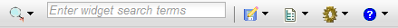
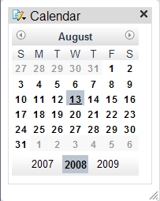
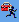
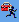

Open the Sample Mashup Application. You should see a window with the following toolbar at the top:

 ) and selecting 'New'. (Note that
in the current release, the 'New' command
will clear the canvas without prompting "are you sure", so you may want
to save your current mashup before selecting 'New'.)
) and selecting 'New'. (Note that
in the current release, the 'New' command
will clear the canvas without prompting "are you sure", so you may want
to save your current mashup before selecting 'New'.)Click on the widget icon on the left side of the toolbar
(with the magnifying glass icon:  )
to display a popup widget palette along the left side of the browser window. The toolbar will look something like this:
)
to display a popup widget palette along the left side of the browser window. The toolbar will look something like this:

(Note: If no widgets appear, then you might need to clear the widget search box that is just to the right of the magnifying glass icon. Make sure the 'Local' repository is selected at the top of the widget catalog list. Finally, click on 'Refresh Search Results'.)
Click on the 'Dojo Calendar' widget. The popup widget palette will disappear and a calendar widget will appear on your canvas with a title bar:

The title bar provides options for customizing the widget:
If you want to control where the widget is placed, with the widget palette open,
you can click on the  icon to the left of the widget name,
and then subsequently click on the canvas to indicate the location where the widget should be placed.
You can preview the widget before placing on the canvas by clicking on the  icon.
This icon appears next to the widget name in the widget palette when the widget is highlighted.
icon to the left of the widget name,
and then subsequently click on the canvas to indicate the location where the widget should be placed.
You can preview the widget before placing on the canvas by clicking on the  icon.
This icon appears next to the widget name in the widget palette when the widget is highlighted.